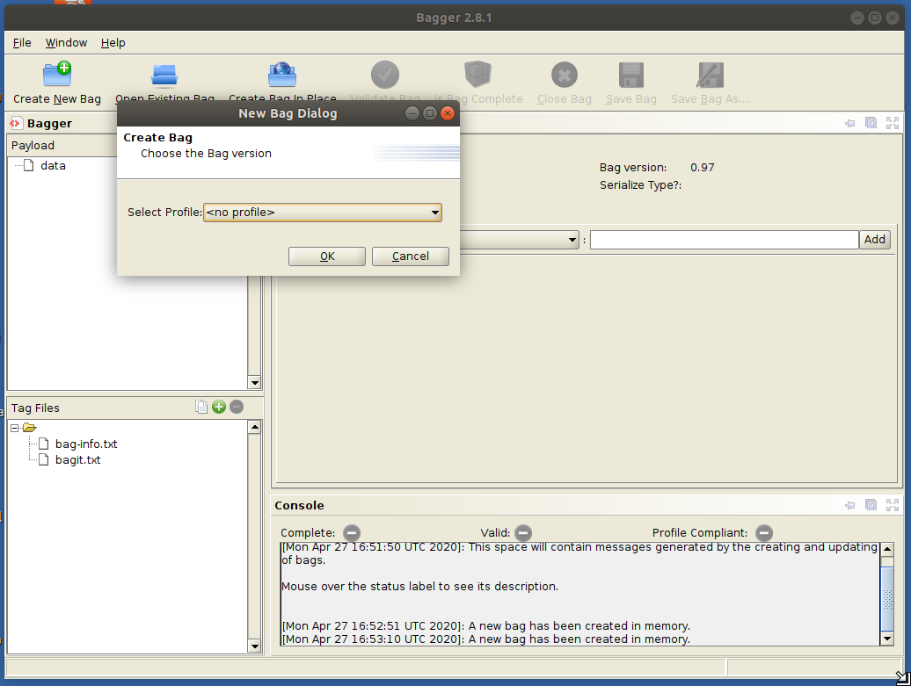
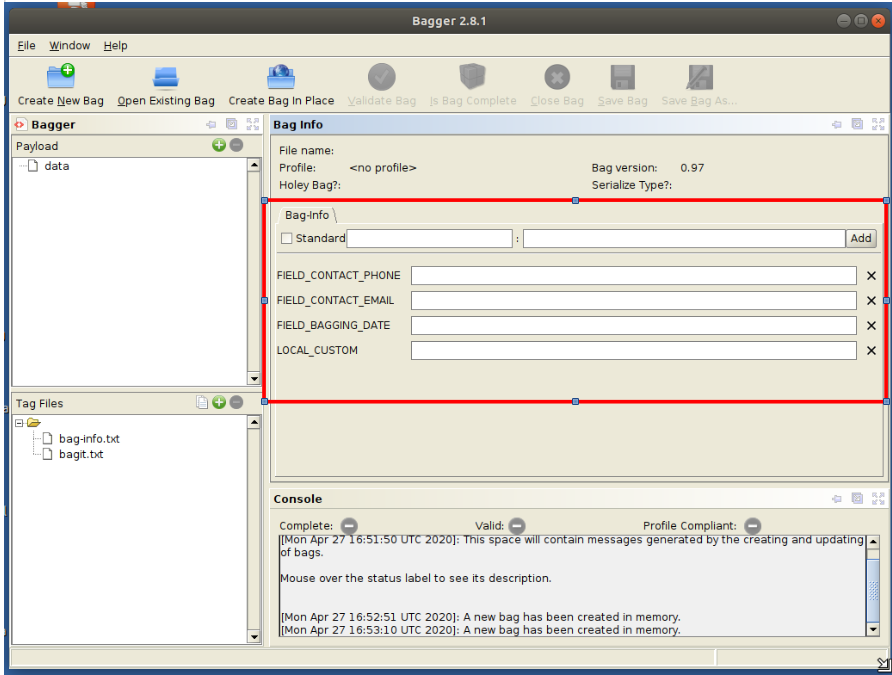
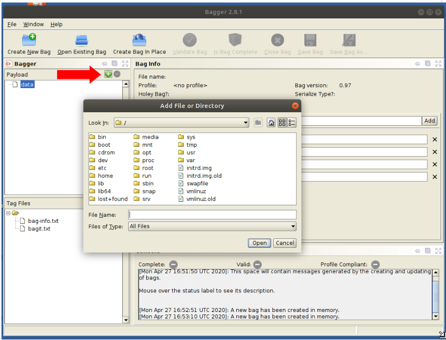

Package files and metadata with Bagger
Bagger is no longer included in the BitCurator Environment. It can still be installed in the environment - see the project website for more details.
Overview:
The Bagger software from the Library of Congress, provides a GUI application for creating and working with packages that conform to the BagIt specification. This application can be installed on BitCurator following instructions on the project's page.
Step By Step:
Step 1: To begin creating a bag, click to 'Create a new bag' and select an existing profile to start with a set of predefined metadata fields or start with no profile to define your own.

Step 2: If choosing no profile, add standard or custom fields in the 'Bag-info' section.

Step 3: Add data to your bag by clicking the plus icon in the corner of the Payload section. Select files or directories of files.

Step 4: Click the 'Save Bag As' link, providing a name and location for the bag. Select the algorithm used for generating hashes that will be used for fixity checking, and click ok. You will receive an on-screen notification that the bag has been successfully created.

External links:
If you would like to provide feedback for this page, please follow this link to the BitCurator Wiki Google Form for the BitCurator All Step-by-Step Guides section.